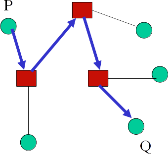

Book problems and notes for chapter 3.
Models for communication
Communication is fairly complex for distributed systems, and needs to cover a wide variety of domain specific tasks. Rather than reinventing the wheel every time, we use an already designed and developed model.
Models abstract network, IPC, security, error handling, and other things. They can be applied to a range of platforms.
Interprocess communication is important in distributed systems. The two models handling this are message passing and shared memory
Message passing model

Message passing can be represented as a directed graph as seen above. The green circles are the processes, and the red squares are the routers.
Each node can perform an internal action, communicate with other nodes, accept external input, or produce external output.
Each channel (the arrows between the nodes) can carry a message. These messages are point to point, meaning that they go directly from one node to another without being received by other nodes.
We assume reliable networks here.
Channel axioms
- Every message sent is received
- Every message has a finite propagation delay with no upper bound
- Each channel is a queue.
In order to ensure that our axioms behave, we need to have protocols in place and abstract them in our application layer, as to not let our distributed framework worry about them.
Channels can hold either a finite or an infinite amount of messages - for finite messages, the channel will be full and a send will block. For the most part, the limit is so large we can treat them as infinite.
Synchrony
It is difficult to keep two systems in sync, because clock drift is inevitable. Likewise, processes are rarely synchronized even on the same system, interrupts causing even synchronized processes to behave poorly. Proper scheduling lets us work around this issue on single systems, but this is impossible on distributed systems.
As a result, waiting for two processes to sync up is nearly impossible, so we use asynchronous communication between distributed processes, which means that there need not be coordination between senders and receivers of messages, the receiver will pick up a message whenever it gets around to it.
In the case that synchronization is required, handshaking is needed to ensure that both the sender and receiver are ready to parse the message.
Realtime systems
Systems where there needs to be deterministic behavior for applications running on it.
Shared variable model
Certain parts of the process memory space overlap, which allows for direct access of memory locations. This reduces the space complexity, because only a single copy of the shared program state needs to be stored, rather than replicating the program state across multiple processes.
This is difficult for distributed systems, but many of them support an abstraction for sharing virtual address space between computers called DSM, which lives on top of message passing. This allows the programmer not to have to worry about synchronizing the state of programs prior to doing computations.
There are two models:
State reading model
Any process can read the state of its neighbors, but can only update its own state.
Link register model
Processes share a register that contains common states, and they can each read from and write to the register, but cannot access any other processes directly. The registers are red boxes in the above picture. This has the advantage of being able to hide a program’s state and decide how much each program wants to share.
Linda
Programs collaborate by depositing tuples and withdrawing them based on pattern matching. Withdrawing is synchronous, depositing is asynchronous.
Mobile agents
Network bandwidth can be saved by doing processing on the server and reducing the amount of data that needs to be sent back.
Model relationships
Two models are equivalent when they have the same types of properties and operations that can be preformed, and they can easily be implemented in each other.
A model is stronger than another when the second requires more than one operation to emulate the firsts operation $\forall$ operations $\in$ the first model. A weaker model is the inverse.